Helm
Helm 是 k8s 的一个项目，相当于 CentOS 的 yum, Debian的apt。
原理
- chart：是 Helm 管理的安装包，里面包含需要部署的安装包资源。
- config：包含了可以合并到打包的 chart 中的配置信息，用于创建一个可发布的对象。
- release：是一个与特定 config 相结合的 chart 的运行实例，一个 chart 可以部署多个 release，即这个 chart 可以被安装多次。
- repository：chart 的仓库，用于发布和存储 chart。
Helm3 架构:
flowchart LR
A[Helm Client] <--> B[Helm Library]Note
Helm3 最明显的变化是删除了 Tiller
Repo操作
helm version
helm repo add stable https://mirror.azure.cn/kubernetes/charts/
helm repo add incubator https://mirror.azure.cn/kubernetes/charts-incubator/
helm repo add bitnami https://charts.bitnami.com/bitnami
helm repo update
helm search repo stable
stable通道有https://mirror.azure.cn/kubernetes/charts/镜像可以替代
安装Charts
本小节会介绍一些常用Charts的安装方法
可以通过两种方式验证部署的情况
- K8S：可以在K8S上运行一个 Pod 作为客户端
- 本地：可以用
kubectl port-forward将MySQL服务转发到本地
Note
大部分数据库应用都会产生PVC。因此需要先准备一个storageClass，否则需要手动创建PV来回应PVC
Note
在Minikube上，大部分的Helm Chart都不需要指定storageClass
Tip
许多本地客户端接入命令会导致kubectl端口转发任务作为后台任务创建。可以用jobs命令列出用户的后台任务，然后使用kill %[n]等命令结束（n为后台任务的编号）
MariaDB
MariaDB 是和MySQL兼容的关系型数据库
helm install my-mariadb --set global.storageClass=nfs-client bitnami/mariadb
helm uninstall my-mariadb
Note
helm uninstall命令不会释放PVC，需要手动释放。（bitnami/mariadb）
Warning
--set global.storageClass=nfs-client指定了使用nfs-client作为storageClass
global.storageClass的默认参数可以通过helm inspect all stable/mysql获得
可以通过kubectl get secret获取密码
export MARIADB_ROOT_PASSWORD=$(kubectl get secret --namespace default my-mariadb -o jsonpath="{.data.mariadb-root-password}" | base64 --decode)
echo $MARIADB_ROOT_PASSWORD
验证
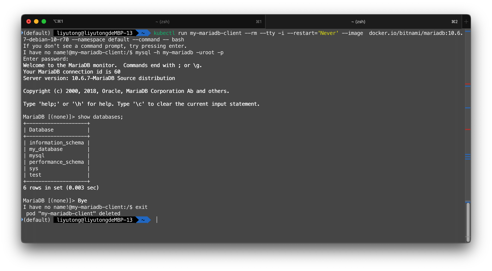
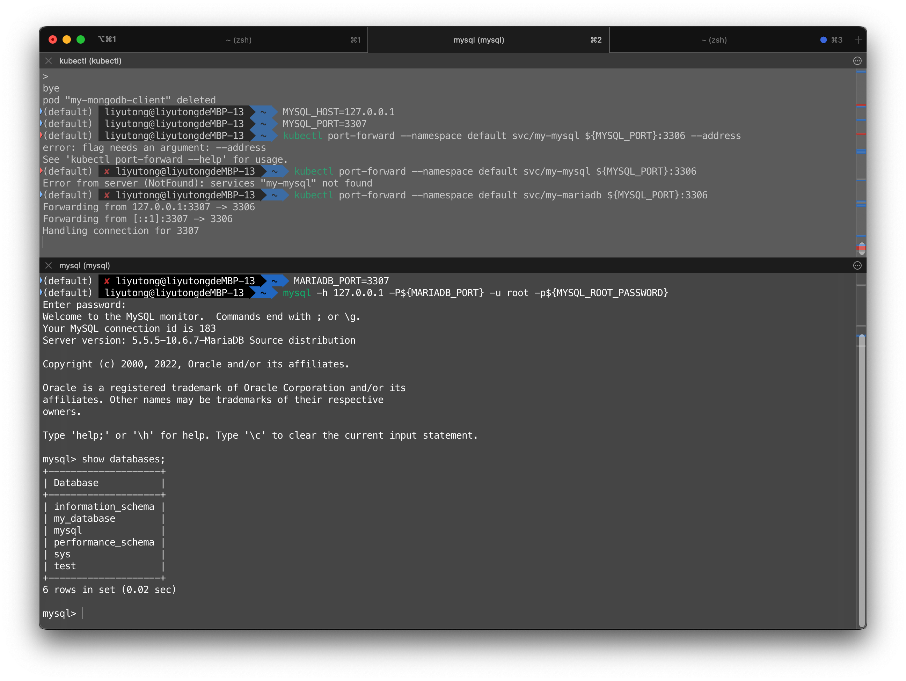
MongoDB
MongoDB 是一个基于分布式文件存储的数据库
helm install my-mongodb --set persistence.storageClass=nfs-client stable/mongodb
helm uninstall my-mongodb
获取密码
export MONGODB_ROOT_PASSWORD=$(kubectl get secret --namespace default my-mongodb -o jsonpath="{.data.mongodb-root-password}" | base64 --decode)
验证
show dbs
use ice6413p # 创建db
db # 显示当前db
db.ice6413p.insert({"name":"ice6413p"}) # 插入一条数据
show dbs # 应该会多出一个ice6413p
db.dropDatabase() # 删除db
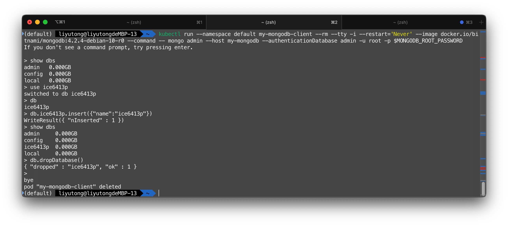
Redis
Redis 是一个key-value 存储系统，是跨平台的非关系型数据库
helm install my-redis --set slave.persistence.storageClass=nfs-client,master.persistence.storageClass=nfs-client stable/redis
helm uninstall my-redis
Note
helm uninstall命令不会释放PVC，需要手动释放。（stable/redis）
获取密码
export REDIS_PASSWORD=$(kubectl get secret --namespace default my-redis -o jsonpath="{.data.redis-password}" | base64 --decode)
echo $REDIS_PASSWORD
kubectl run --namespace default my-redis-client --rm --tty -i --restart='Never' --env REDIS_PASSWORD=$REDIS_PASSWORD --image docker.io/bitnami/redis:5.0.7-debian-10-r32 -- bash
[pod] $ redis-cli -h my-redis-master -a $REDIS_PASSWORD # read/write operation
[pod] $ redis-cli -h my-redis-slave -a $REDIS_PASSWORD # read-only operation
验证
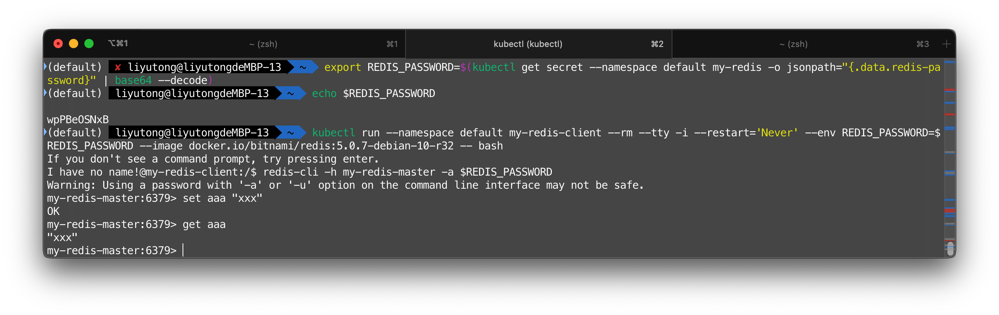
RabbitMQ
RabbitMQ是实现了高级消息队列协议（AMQP）的开源消息代理软件
helm install my-rabbitmq --set persistence.storageClass=nfs-client stable/rabbitmq
helm uninstall my-rabbitmq
Note
helm uninstall命令不会释放PVC，需要手动释放。（stable/rabbitmq）
获取凭据
export RABBITMQ_USERNAME="user"
export RABBITMQ_PASSWORD=$(kubectl get secret --namespace default my-rabbitmq -o jsonpath="{.data.rabbitmq-password}" | base64 --decode)
export RABBITMQ_COOKIE=$(kubectl get secret --namespace default my-rabbitmq -o jsonpath="{.data.rabbitmq-erlang-cookie}" | base64 --decode)
Tip
上述的命令会导致端口转发任务作为后台任务创建
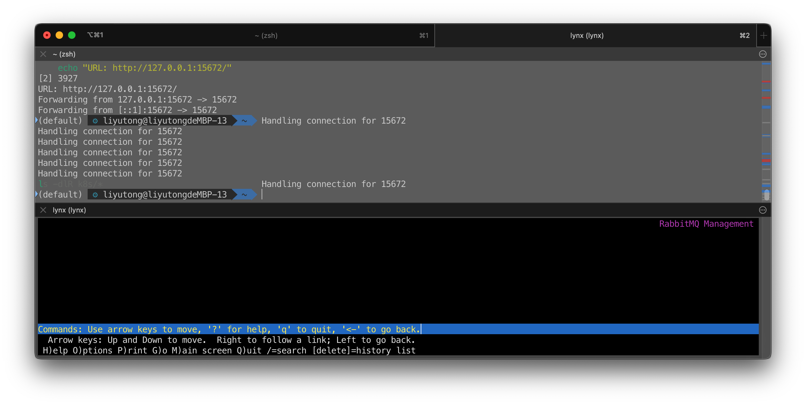
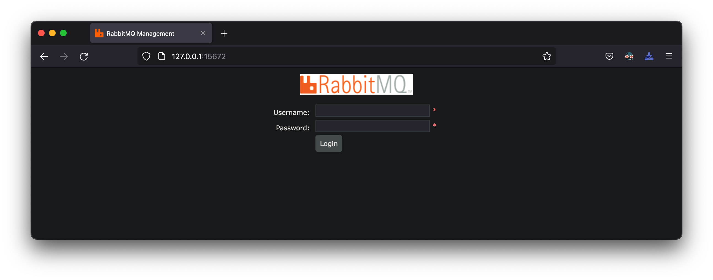
Kafka
Kafka 是一种分布式的，基于发布 / 订阅的消息系统。主要设计目标如下： 以时间复杂度为 O(1) 的方式提供消息持久化能力
Kafka 不需要持久化
访问http://127.0.0.1:8080/
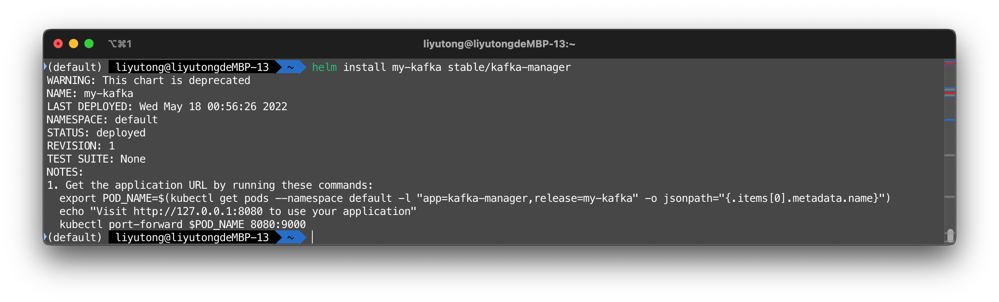
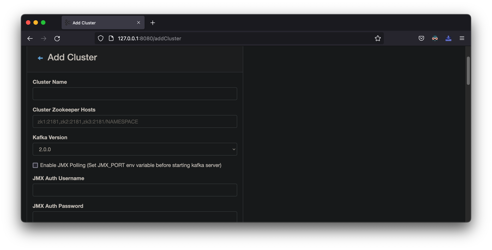
ElasticSearch
Elasticsearch 是一个分布式、RESTful 风格的搜索和数据分析引擎，能够解决不断涌现出的各种用例
Warning
根据这里和这里，ElasticSearch需要执行sysctl -w vm.max_map_count=262144 && sysctl -w fs.file-max=65536修改内核设置
执行curl http://127.0.0.1:9200/
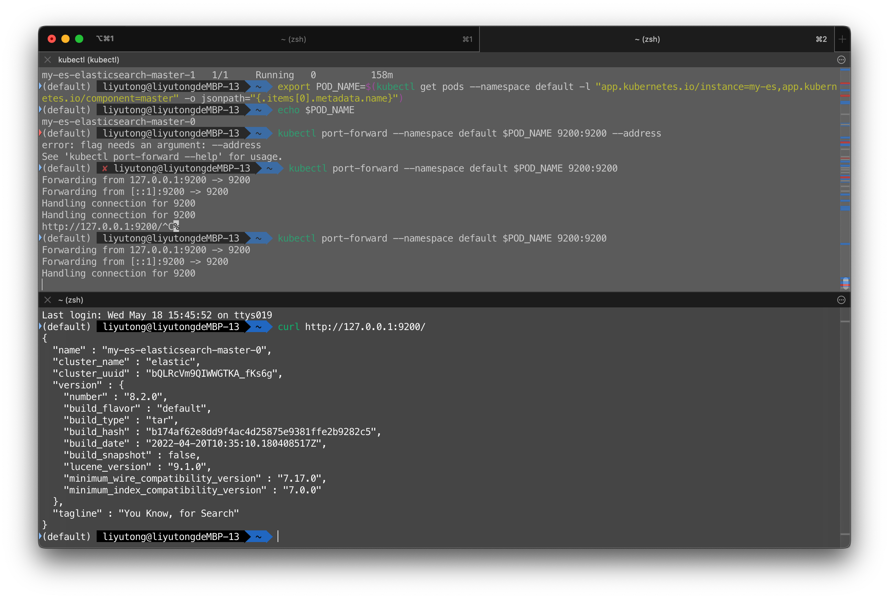
Custom Charts
可以自定义Charts。以下是一些常见的命令
Release
helm create hello-svc: 创建 Helm packagehelm install --dry-run --debug ./：验证模板和配置helm install ./：启动本chart的releasehelm list：列出 releasehelm delete [release]删除特定的 release
Custom Charts
举例说明
[node] $ docker pull nginx # Selective
helm create hello-helm
helm install hello-nginx ./hello-helm
export POD_NAME=$(kubectl get pods --namespace default -l "app.kubernetes.io/name=hello-helm" -o jsonpath="{.items[0].metadata.name}")
kubectl port-forward $POD_NAME 8080:80
helm uninstall hello-nginx
访问 http://127.0.0.1:8080 来使用应用
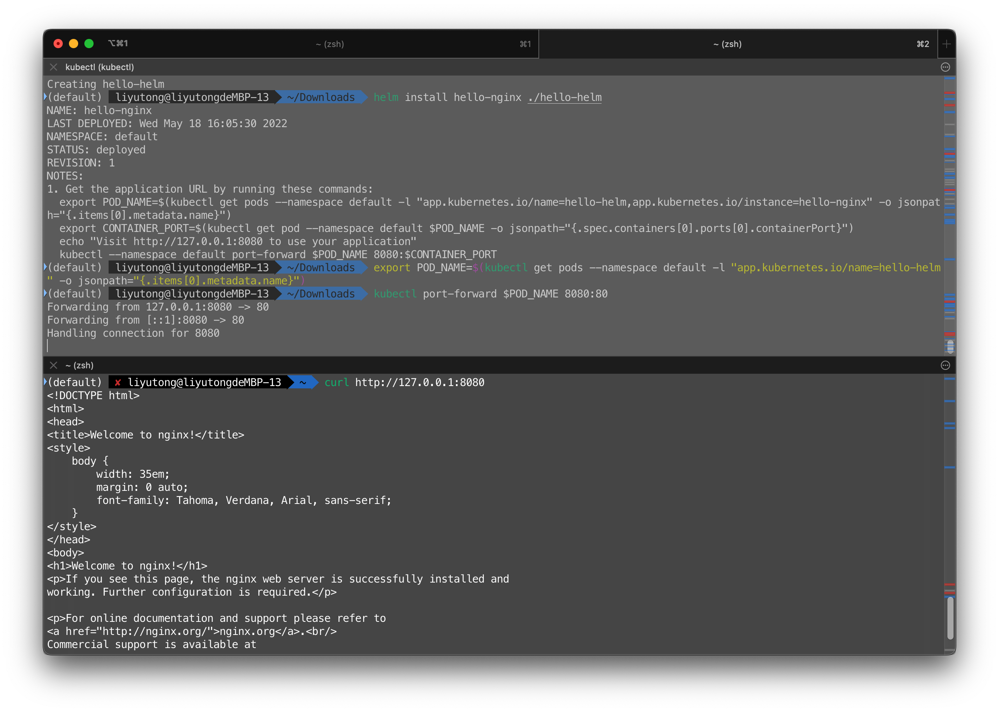
实验完毕删除所有的Helm Release和PVC
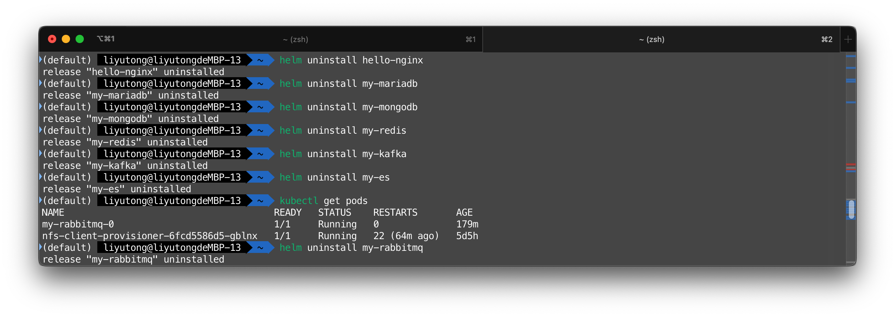
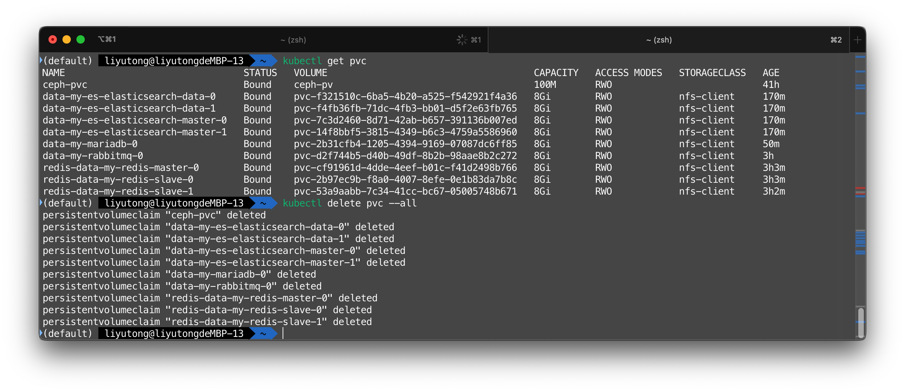